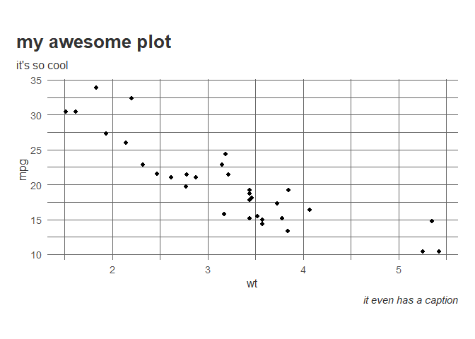
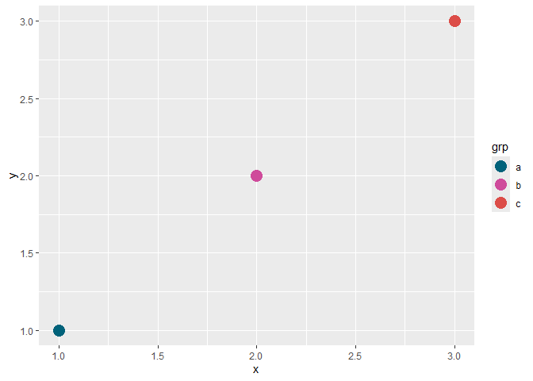
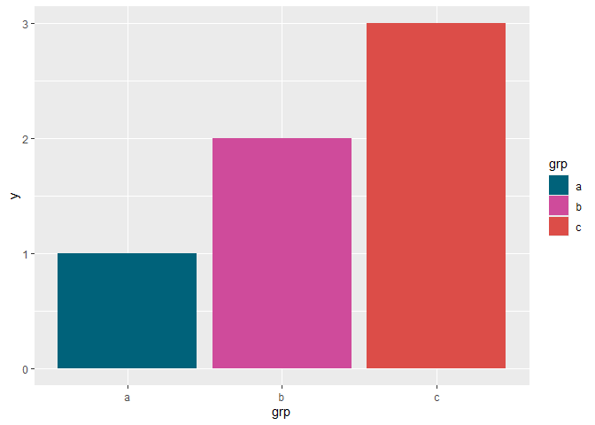

ccpsplot provides R plotting utilities for CCPS. Currently, it provides two general utilities:
- a minimalist ggplot theme (
theme_ore()); - color palettes and ggplot scales that use the official CCPS “school board” colors.
Installation
You can install the development version of ccpsplot from Github with:
# install.packages("pak")
pak::pak("ccps-research-eval/ccpsplot")Usage
ggplot theme
Apply theme_ore() to a ggplot object in the usual fashion:
library(ggplot2)
#> Warning: package 'ggplot2' was built under R version 4.5.3
library(ccpsplot)
ggplot(mtcars, aes(x = wt, y = mpg)) +
geom_point() +
labs(
title = "my awesome plot",
subtitle = "it's so cool",
caption = "it even has a caption"
) +
theme_ore()
custom colors
We can apply custom ggplot color/fill palettes like so:
z <- data.frame(
grp = c("a", "b", "c"),
x = 1:3,
y = 1:3
)
ggplot(z, aes(x, y, color = grp)) +
geom_point(size = 5) +
scale_color_schoolboard()
ggplot(z, aes(grp, y, fill = grp)) +
geom_col() +
scale_fill_schoolboard()